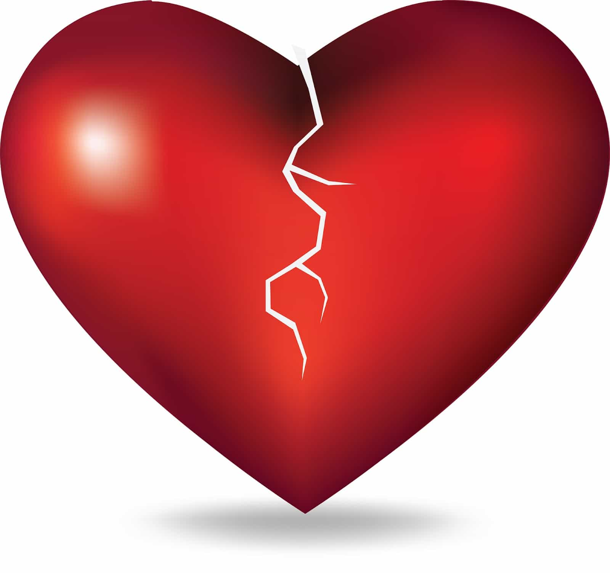
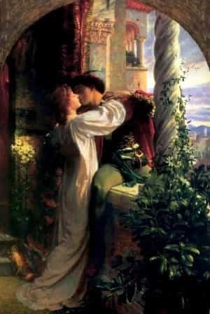

< < < Back
5 Myths About Love – Return Of Kings
Romantic love is one of the most intense experiences you are ever likely to experience. But as with anything related to feelings, it has become exalted to moral and almost religious status in our over-feminized society.
A man should be aware of the power of love. He should not allow himself to be overpowered by it, losing all his mental faculties and common sense. Of all self improvement efforts, this can be the most difficult. Resistance training can be built up gradually over time, but love can hit like an unexpected freight train, knocking a fellow off his feet and leaving him floundering helplessly like a newborn baby. Young, inexperienced men seem most vulnerable to Cupid’s bow, but older gents are not immune to his spell, especially if the man is accomplished enough to win the attentions of a much younger woman. Understanding love may help a man to embrace its power without losing his direction.
Here are myths about love that you must recognize if you are to keep your head
1. Love is the best thing that can happen to you
Love might be a wonderful thing, leading to cherished children, grandchildren, and a loyal partner to share your dotage. It might result in an immensely memorable holiday romance. Love might also blind you to the true nature of a woman with Borderline Personality Disorder—one who may try to take your money, your children or even your freedom. More likely, it will simply lead you to impregnate, marry, or cohabitate with the wrong person. Peruse these real life accounts of relationships on the rocks after the honeymoon is well and truly over. Not to be read at night while you’re home alone.
Love might not even be enjoyable. The sensation of losing control over one’s feelings and turning into a daydreaming zombie who keeps missing his train station might be cute for onlookers but can be uncomfortable for the poor sod experiencing this state. It is sometimes said that no two people’s experience of love are the same.
2. Love justifies all

Since the High Middle Ages, Europe and its diaspora have fallen under the spell of courtly love. In this view, love is a transcendent experience that makes everything right and its absence makes everything wrong.
The reader will be familiar with common societal beliefs that stem from this moral view of romantic love: one should only marry for true love; a couple should break up if the woman says “I love you but I’m not in love with you”; and it’s okay (for a woman) to have an affair if it’s for love. Love outweighs all other considerations—duty, justice, faith—as the yardstick to measure one’s actions.
This is not a view shared in the greater part of the world. In other times and places, romantic love has been seen as a dangerous and humiliating sickness that ought to be avoided. The next time someone tells you that love justifies some recent outrage, ask them why. Ask if passionate emotion would also justify kicking a dog. No? Well, it’s clearly not everything then, is it?
3. True love will last forever
Romantic love is like a rainbow. It can be lovely but it’s not a permanent feature of the landscape. The first flush of love can last for a long time—perhaps for years—but it will not last forever. Basing a marriage and stable child rearing on this emotion alone is likely to end in tears.
An enduring relationship must be grounded on more than romantic love. It might be based on a more sedate, familiar love born of mutual respect for each other’s roles and duties. This is the sort of love a man might experience when watching his wife breastfeed their baby. A relationship can also be based on commitment and the idea of being responsible to a community. Religion and culture have traditionally played an important part here.
In fact, it is possible to do away with romantic love altogether. Marriages in many places continue to be arranged by parents and are often quite successful, with the familiar love described gradually developing over the years spent together. Romantic love is more appropriate for girlfriends and flings.
They say that in ancient Rome, a servant would whisper in a triumphant, returned general’s ear: fame is fleeting. Before making a major life decision, whisper this gentle truth to yourself to maintain some rationality: love is transient.
4. Women and men love the same way

You already know how men love. Women’s love is more fickle. While she may experience feelings even more deeply than a man, a woman’s love is not blind. It has an eagle’s vision and can immediately spot weakness, loss of status or other disappointments. A women will usually not know why her feelings have changed. She will merely notice that they have, and a once passionate attraction will vanish into the air quite as though it never was. This is why a woman will often abandon her man if he is sick, unemployed, or has otherwise fallen into a funk.
Do not despise women for their nature. They are adapted to seek out a strong partner just as surely as we are evolved to seek out a sexy one. But see their love for what it is and accept the requirements it lays upon you should you wish to retain your preeminence in her heart.
5. Love is all there is

In Western culture children are led to believe that the point of being born is to grow up and to fall in love. Those who are not in love are thought to be incomplete as human beings. The dirty tramp with his wizened crone of a girlfriend is considered happier than the wealthy bachelor who enjoys the attentions of many women but favors none in particular. Clearly this is not right. I’ve been in love and I’ve been out of love. They’re both perfectly acceptable and bearable states for a person to experience.
There are various things that are just as important, if not more so, than being in love. Here are just a few: saving money, learning, caring for your family. You want more? Eating properly, exercise, hygiene, creativity and invention. Friendship. Adventure. Teaching another person what you know. Love can be great but it does not trump all.
Conclusion

Love can be a magnificent thing. It can be exhilarating. It can be miserable. It can raise a man up and inspire him to improve himself or it can muddy his mind and cause his ignominious disgrace.
When love strikes your heart and makes the colors of the world swirl before your face, it is difficult to maintain any reason amid this intense passion. But you must. Because you know better.
Read More: The Timeless Female Abuse of Love